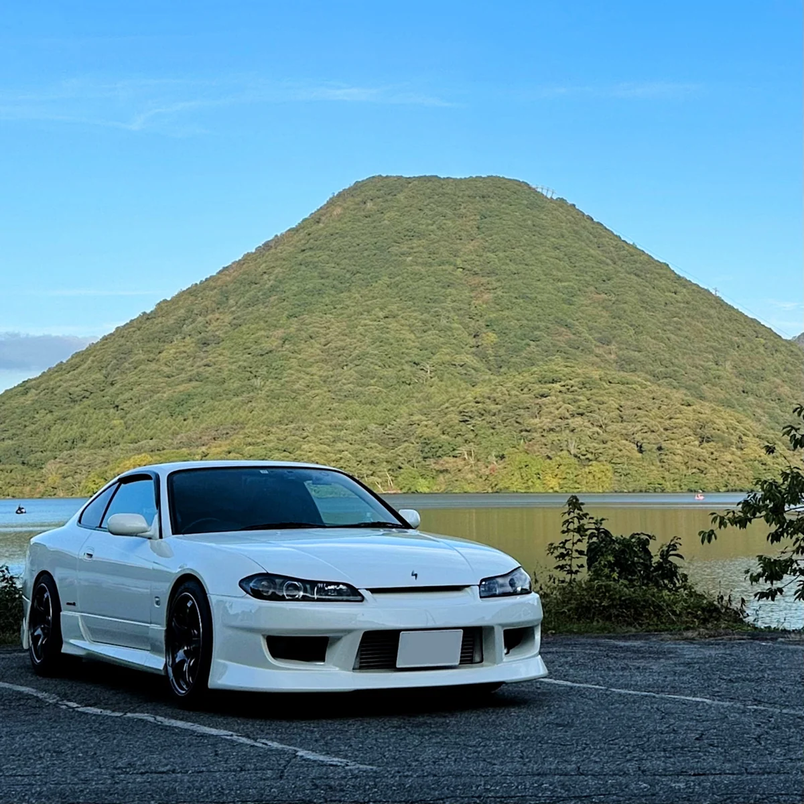

MY GARAGE. / CAR ARCHIVE
NISSAN
SILVIA S15.

01 / THE CAR
The Car.
NISSAN SILVIA S15 Spec-R AERO
02 / BUILD CONCEPT
Street-Focused.
サーキット走行の経験もありつつ、普段の街乗りをベースにしたカスタムを楽しんでいます。
03 / CUSTOMIZATION — SPEC SHEET
The Details.
WHEEL
YOKOHAMA WHEEL ADVAN Racing TC-4 (17 × 8.0J / +38)
SUSPENSION
D-MAX SUPER STREET サスペンションKIT
SUSPENSION ARMS
D-MAX / D1SPEC
- ピロリアアッパーアーム
- ピロテンションロッド オフセットtype Ver.2
- ピロトラクションロッド
- ピロリアトーコントロールロッド（Ver.2）
GP SPORTS
- 強化タイロッド＆タイロッドエンドセット
EXHAUST
GP SPORTS EVO Tune
AERO PARTS
FRONT
GP SPORTS G-SONIC ZERO ONE
REAR
GP SPORTS G-SONIC ZERO ONE
INTERCOOLER
BLITZ INTER COOLER
STEERING
NARDI CLASSIC / LEATHER 340mm (ブラックレザー × ブラックスポーク)
METERS & GAUGES
COMBINATION METER
NISMO コンビネーションメーター（280km/h）
MULTI-FUNCTION DISPLAY
YASHIO FACTORY 岡ちゃんウォーターテンプ3
BOOST GAUGE
Defi-Link Meter ADVANCE BF（ターボ計）